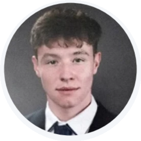
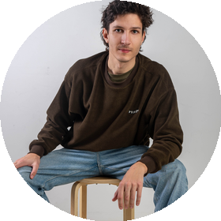
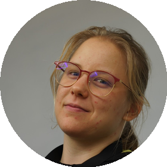
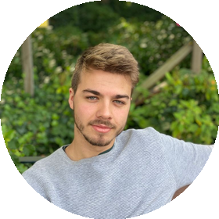

Greenie is a civic-engagement platform, the Help2Go app and web portal that make volunteering, donating and community action as engaging as social media. I founded it, led it end to end, and took it from a blank page to a launched product with a real team, real funding and real recognition behind it.
Product & delivery
From discovery to a launched MVP
A gamified app, first of its kind, streamlining volunteering, donations and petitions for the nonprofit sector.
- Product lead for end-to-end creation and launch of a civic-engagement (B2B + B2C) app + web portal, product strategy, requirements and GTM, focused on end-user and sophisticated personas.
- Hired and led an international team across Software Development, UI/UX, Research and Graphic Design.
- Directed product partnerships (Greenpeace, Red Cross, EUSA), marketing and sales enablement.
- Led high-scale product discovery across 2 countries, focus groups, surveys, client interviews and field feedback (25+ nationalities), with statistical analysis and tailored advanced models.
- Integrated data protection, compliance and market-specific legal considerations.
- Managed fundraising and secured 1,000,000 kr in funding.
- Locked in revenue streams from government and nonprofit institutions.
- Frequent speaker at conferences and webinars; TEDx speaker.
Research
Validated fit before writing code
- 8 focus groups, 200+ survey responses, 30+ interviews across 25+ nationalities.
- Applied GE Matrix, Product Diffusion Curve, VFI and segmentation to shape the offer and roadmap.
UX design, artistic & scientific
Greenie’s design sits where art meets science: an expressive, gamified interface built on top of rigorous, in-depth user research. The full research corpus and design system go deeper than a portfolio page should, they’re available to review on request.
- Research deck
- UX system
- Prototypes
Mentors
Guided by people I deeply respect
Jan Peloza · Social entrepreneur · CEO, Impact Hub Slovenia
Business strategy and B2G counselling, connecting a social company to government and the civic ecosystem.
Mark Kalin · Investor & Portfolio Manager, ABC Accelerator
Coaching on pitching and communication, framing the value proposition for funders and stakeholders.
dr. Matevž Pešek · Faculty of Computer & Information Science, UL
Technical and product-engineering mentorship, from Figma prototyping to delivery frameworks.
Incubators & programmes
- Ljubljana University Incubator (LUI)
- Impact Hub Ljubljana
- Startup Incubator Slovenia
- PONI Goriška
- Social Impact Award Slovenia
Recognition
Social Impact Award • POPRI • Rector’s Award • Launchpad IH • One Digital Award Hungary • TEDx Speaker
Earlier publications and awards appear under former name Nina Planinšek.
Recommendation letters
Earlier publications and awards appear under former name Nina Planinšek.
The team
The people who built it with me




Photos


Everyone involved
Partners, supporters and collaborators who made Greenie possible:
Writing about the journey
Longer stories from building Greenie, coming to the blog.